주택관리사보-1차 (2011-07-17 기출문제)
1과목: 민법
1. 민법의 법원(法源)에 관한 설명으로 옳지 않은 것은? (다툼이 있으면 판례에 의함)
- 조약은 국회의 비준을 얻더라도 법원(法源)이 될 수 없다.
- 관습법의 확인과 적용은 법원(法院)이 직권으로 하는 것이 원칙이나, 당사자가 이를 주장ㆍ입증할 수도 있다.
- 상행위와 관련된 법률관계에서는 상관습법이 민법보다 우선하여 적용된다.
- 관습법이 헌법에 위반될 때에는 법원(法院)이 그 효력을 부인할 수 있다.
- 관습이 관습법이 되기 위해서는 사회의 법적 확신과 인식에 의해 법적 규범으로 승인ㆍ강행되어야 한다.
(정답률: 알수없음)

2. 형성권에 관한 설명으로 옳지 않은 것은? (다툼이 있으면 판례에 의함)
- 채권자취소권은 반드시 재판상으로만 행사해야 하는 형성권이다.
- 계약의 해제권은 형성권이 아니다.
- 형성권의 행사로 법률관계를 변경시킬 수 있다.
- 민법전에 청구권으로 표기된 권리 중에는 그 본질이 형성권인 것도 있다.
- 건물소유목적의 토지임대차기간이 만료된 경우, 임차인이 행사하는 임대차계약의 갱신청구권은 형성권이 아니다.
(정답률: 50%)
3. 자연인의 권리능력에 관한 설명으로 옳은 것은? (다툼이 있으면 판례에 의함)
- 태아는 불법행위에 기한 손해배상의 청구권에 관하여는 이미 출생한 것으로 본다.
- 실종선고를 받은 자는 그 재판이 확정된 때에 사망한 것으로 본다.
- 태아는 모든 법률관계에서 자연인과 동일한 권리능력을 갖는다.
- 출생한 자는 가족관계등록부에 등록되는 것을 정지조건으로 출생시로 소급하여 권리능력을 취득한다.
- 2인 이상이 동일한 위난으로 사망한 경우에는 동시에 사망한 것으로 간주한다.
(정답률: 39%)
4. 의사능력에 관한 설명으로 옳지 않은 것은? (다툼이 있으면 판례에 의함)
- 의사능력이란 자신의 행위의 의미나 결과를 정상적인 인식력과 예기력을 바탕으로 합리적으로 판단할 수 있는 정신적 능력내지는 지능을 말한다.
- 민법에는 의사능력에 관한 명문규정이 없다.
- 행위무능력자의 반환범위를 현존이익으로 제한하는 민법의 규정은 의사무능력자의 법률행위에도 유추적용 된다.
- 의사능력의 유무는 구체적인 법률행위와 관련하여 개별적으로 판단되어야 한다.
- 법률행위시에는 의사능력이 있었더라도 그 후 의사무능력자가 되었다면 이를 이유로 그 법률행위를 취소 할 수 있다.
(정답률: 64%)
5. 미성년자인 甲은 행위능력자 乙과 甲소유의 도자기를 매도하는 계약을 체결하였고, 乙은 그 후 甲이 미성년자라는 사실을 알게 되었다. 甲에게는 친권자 丙이 있으며 甲은 여전히 미성년자이다. 다음 설명 중 옳지 않은 것은?
- 乙은 丙에게 매매계약의 추인여부를 최고할 수 있다.
- 乙의 최고에 대해서 유예기간 내에 丙이 확답을 발하지 않으면 추인을 거절한 것으로 본다.
- 乙은 丙의 추인이 있기 전까지 丙뿐만 아니라 甲에 대해서도 매수의 의사표시를 철회할 수 있다.
- 甲은 단독으로 매매계약을 추인할 수 없다.
- 甲이 사술로 丙의 동의가 있는 것으로 믿게 한 경우, 甲은 매매계약을 취소하지 못한다.
(정답률: 59%)
6. 부재와 실종에 관한 설명으로 옳지 않은 것은?
- 법원에 의해 부재자의 재산관리인이 선임되면 그 때부터 부재자는 사망한 것으로 본다.
- 법인에 대하여는 부재자의 개념이 인정되지 않는다.
- 추락한 항공기에 있었던 자의 생사가 항공기의 추락 후 1년간 분명하지 않은 경우 실종선고를 청구할 수 있다.
- 원칙적으로 실종선고의 취소에는 소급효가 있다.
- 실종선고 후 그 취소 전에 선의로 한 행위의 효력은 실종선고의 취소에 의해 영향을 받지 않는다.
(정답률: 50%)
7. 민법상 법인에 관한 설명으로 옳지 않은 것은?
- 법인의 설립등기는 법인의 성립요건이다.
- 상사회사설립의 조건에 따라 영리를 목적으로 하는 재단법인을 설립할 수 있다.
- 법인의 권리능력은 법률의 규정에 따라 정관으로 정한 목적범위내로 제한된다.
- 이사의 결원으로 법인에게 손해가 발생될 염려가 있는 때에는 이해관계인이나 검사의 청구에 의해 법원은 특별대리인이 아니라 임시이사를 선임해야 한다.
- 청산법인은 청산의 목적 범위내에서만 권리가 있고 의무를 부담한다.
(정답률: 39%)
8. 민법상 법인에 관한 설명으로 옳지 않은 것은? (다툼이 있으면 판례에 의함)
- 법인의 해산 및 청산은 주무관청이 아니라 법원이 검사ㆍ감독한다.
- 사단법인을 설립하기 위해서는 설립자가 일정한 사항을 기재한 정관을 작성하여 기명날인해야 한다.
- 사단법인 정관의 법적성질은 자치법규가 아니라 사원간의 계약으로 보아야 한다.
- 법인설립에는 목적의 비영리성, 설립행위, 주무관청의 허가, 설립등기의 요건을 갖추어야 한다.
- 법인은 그 주된 사무소의 소재지에서 설립등기를 함으로써 성립한다.
(정답률: 29%)
9. 민법상 사단법인의 정관에 관한 설명으로 옳지 않은 것은? (다툼이 있으면 판례에 의함)
- 사원총회의 결의에 의한 정관해석은 사원들이나 법원을 구속하는 효력이 없다.
- 정관의 변경은 주무관청의 허가를 얻지 않으면 그 효력이 없다.
- 사원의 지위를 상속할 수 있도록 한 정관의 규정은 유효하다.
- 사단법인의 정관은 총사원 3분의 2 이상의 동의가 있는 때에 한하여 이를 변경할 수 있는 것이 원칙이다.
- 결의권평등의 원칙을 변경하는 정관의 규정은 효력이 없다.
(정답률: 59%)
10. 재단법인에 관한 설명으로 옳은 것을 모두 고른 것은? (다툼이 있으면 판례에 의함)
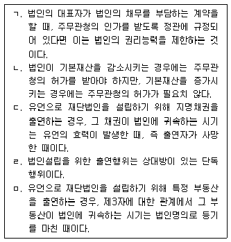
- ㄱ, ㄴ
- ㄱ, ㄷ
- ㄴ, ㄹ
- ㄴ, ㅁ
- ㄷ, ㅁ
(정답률: 알수없음)
11. 법인의 이사에 관한 설명으로 옳지 않은 것은? (다툼이 있으면 판례에 의함)
- 사임하지 않은 다른 이사들로써 정상적인 법인활동이 가능하면 사임한 이사에게 직무를 계속 행사하게 할 필요는 없다.
- 법인 대표자의 유임내지 중임을 금지하는 규약이 없는 이상, 임기만료 후에 대표자 개임이 없었다면 그 대표자를 묵시적으로 다시 대표자로 선임하였다고 해석된다.
- 정관에 다른 규정이 없는 한, 이사의 사임의 의사표시는 법인에 대한 일방적인 의사표시와 법인의 승낙이 있어야만 효력이 발생한다.
- 이사의 퇴임은 등기 후가 아니면 제3자에게 대항할수 없다.
- 이사가 사임의 의사표시를 한 경우, 사임의 효력이 발생하기 전에 사임의 의사표시를 철회할 수 있다.
(정답률: 42%)
12. 물건에 관한 설명으로 옳지 않은 것은? (다툼이 있으면 판례에 의함)
- 토지의 개수는 지적공부상 토지의 필수에 의한다.
- 사람은 유언으로 본인의 시신을 병원에 연구용으로 기증할 수 있으나, 제사를 주재하는 자가 이에 법적 구속을 받는 것은 아니다.
- 집합물은 이를 하나의 물건으로 인정하는 법률의 특별규정이 있는 경우에 한하여 하나의 물건으로 취급한다.
- 법정과실은 수취할 권리의 존속기간 일수의 비율로 취득함이 원칙이다.
- 유체물이어도 배타적 관리가능성이 없으면 물건으로 보지 않는다.
(정답률: 알수없음)
13. 주물과 종물에 관한 설명으로 옳지 않은 것은? (다툼이 있으면 판례에 의함)
- 건물의 구성부분인 창문은 종물이 아니다.
- 주물의 소유자와 다른 사람의 소유에 속하는 물건은 종물이 될 수 없는 것이 원칙이다.
- 주물만 처분하기로 하고 종물은 처분하지 않기로 하는 특약은 유효하다.
- ‘종물은 주물의 처분에 따른다’는 규정은 사법관계에만 적용될 뿐 공법상의 처분에는 적용되지 않는다.
- 주물 자체의 상용에 이바지하는 것이 아니라 주물의 소유자의 상용에 이바지하는 물건은 종물이 아니다.
(정답률: 47%)
14. 강행규정에 관한 설명으로 옳은 것은? (다툼이 있으면 판례에 의함)
- 신의칙에 반하는 것은 강행규정에 위배되는 것이지만, 법원은 당사자의 주장이 있는 경우에 한하여 이를 판단할 수 있다.
- 강행규정에 위반한 자가 스스로 그 약정의 무효를 주장하는 것은 특별한 사정이 없는 한 신의칙에 반하는 행위로 허용될 수 없다.
- 강행규정의 위반으로 인한 무효는 선의의 제3자에게 대항할 수 없다.
- 강행규정의 위반으로 인한 무효는 추인에 의하여 유효로 될 수 없다.
- 강행규정 위반으로 무효인 경우, 급부자는 언제나 그 급부한 것의 반환을 청구할 수 있다.
(정답률: 54%)
15. 효력발생시기가 발신주의에 해당하는 것을 모두 고른 것은? (다툼이 있으면 판례에 의함)
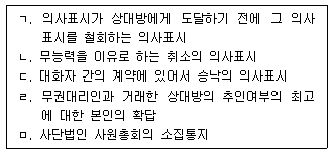
- ㄱ, ㄴ
- ㄱ, ㄹ
- ㄴ, ㄷ
- ㄷ, ㅁ
- ㄹ, ㅁ
(정답률: 50%)
16. 법률행위의 해석에 관한 설명으로 옳은 것은? (다툼이 있으면 판례에 의함)
- 계약당사자가 누구인지를 확정하는 것은 법률행위의 해석과는 전혀 무관한 것이다.
- 당사자의 진정한 의사를 알 수 없는 의사표시는, 내심적 효과의사가 아닌 표시행위로부터 추단되는 효과의사에 기초하여 해석하는 것이 원칙이다.
- 약관의 의미가 불명확한 경우, 작성자에게 유리하게 해석하여야 한다.
- 사실인 관습은 법률행위해석의 표준이 될 수 없다.
- 의사표시의 해석은 서면에 사용된 문구에 구애받는 것이므로, 당사자가 그 표시행위에 부여한 의미를 논리칙과 경험칙에 따라 객관적으로 해석하는 것은 허용되지 않는다.
(정답률: 50%)
17. 의사표시에 관한 설명으로 옳지 않은 것은? (다툼이 있으면 판례에 의함)
- 진의가 아님을 상대방이 알 수 있었던 비진의표시는 무효이다.
- 표의자가 과실없이 상대방을 알지 못한 경우, 의사 표시는 민사소송법 공시송달의 규정에 의해 송달할 수 있다.
- 대리행위에서 착오가 있는지의 여부는 본인을 기준으로 판단하는 것이 원칙이다.
- 제3자의 사기에 의한 의사표시에서 표의자의 상대방이 그 사실을 알 수 있었다면 표의자는 그 의사표시를 취소할 수 있다.
- 통정허위표시로 계약을 체결한 자는 선의로 그 계약에 기한 채권을 가압류한 자에게 그 무효로 대항할 수 없다.
(정답률: 50%)
18. 반사회적 법률행위로 무효가 아닌 것은? (다툼이 있으면 판례에 의함)
- 취득시효가 완성된 부동산의 소유자가 취득시효완성사실을 알고 소유권이전등기 의무를 회피할 목적으로 아들과 공모하여 그 부동산을 아들에게 증여하는 행위
- 도박채무의 변제를 위하여 부동산의 처분을 위임받은 채권자가 그 부동산을 이러한 사정을 모르는 제3자에게 매도하는 행위
- 증인이 증언을 조건으로 소송의 일방 당사자로부터 통상적으로 용인될 수 있는 수준을 넘어서는 대가를 받기로 약정하는 행위
- 종중재산이 적법하게 명의신탁된 경우, 제3자가 명의 수탁자의 명의신탁자에 대한 배임행위에 적극 가담하여 명의수탁자로부터 부동산을 매수하는 행위
- 보험계약자가 다수의 보험계약을 통하여 보험금을 부정취득할 목적으로 보험계약을 체결하는 행위
(정답률: 46%)
19. 허위표시의 무효로 대항할 수 없는 제3자에 속하지 않는 자는? (다툼이 있으면 판례에 의함)
- 가장소비대차의 대주가 파산선고를 받았을 때의 파산관재인
- 가장저당권의 실행에 의해 부동산을 매수한 자
- 채권의 가장양도에서 가장양수인에게 채무를 변제하지 않고 있던 채무자
- 허위의 근저당권설정계약이 유효하다고 믿고 그 피담보채권에 압류결정을 받은 자
- 가장채무가 존재한다고 믿고 보증계약을 체결한 뒤 그 보증채무를 이행하여 구상권을 취득한 보증인
(정답률: 40%)
20. 비진의 의사표시의 요건에 관한 설명으로 옳지 않은 것은? (다툼이 있으면 판례에 의함)
- 의사표시가 존재하여야 한다.
- 표의자의 진의와 표시가 일치하지 않아야 한다.
- 표의자가 진의와 표시의 불일치를 알지 못하여야 한다.
- 표의자가 의사표시를 하는 이유나 동기는 묻지 않는다.
- 여기서 진의란 특정한 내용의 의사표시를 하고자 하는 표의자의 생각을 말한다.
(정답률: 50%)
21. 甲은 고층아파트를 짓기 위해 乙 소유의 토지를 매입하기로 하는 계약을 체결하고 계약금을 주었으나, 그 부동산은 법령상의 제한으로 고층아파트를 건축할 수 없는 토지였다. 한편 甲ㆍ乙간의 계약서에 이 토지의 용도가 ‘주택건설용지’로 기재된 사실은 있지만 어떤 규모나 형태의 주택을 건설할지에 대한 언급은 없으며, 乙은 甲의 구체적인 건축계획을 모르는 상황이다. 다음 설명 중 옳은 것은? (다툼이 있으면 판례에 의함)
- 甲ㆍ乙간의 매매계약은 유효하다.
- 甲ㆍ乙간의 매매계약은 원시적 불능에 해당하여 무효이다.
- 甲은 표시상의 착오를 이유로 매매계약을 취소할 수 있다.
- 甲은 사기에 의한 계약이라는 이유로 매매계약을 취소할 수 있다.
- 甲이 중도금과 잔금을 지급하지 않았다고 하여 乙이 매매계약을 해제할 수는 없다.
(정답률: 39%)
22. 착오에 의한 의사표시에 관한 설명으로 옳지 않은 것은? (다툼이 있으면 판례에 의함)
- 법률행위의 내용의 중요부분에 착오가 있어야 취소 할 수 있다.
- 부동산 매매에 있어서 시가에 관한 착오는 일반적으로 중요부분에 관한 착오라고 할 수 없다.
- 개당 1,000달러에 팔 것을 1,000원으로 잘못 기재한 것은 착오에 의한 의사표시에 해당한다.
- 표의자에게 중대한 과실이 없어야 취소할 수 있다.
- 매도인이 매매계약을 적법하게 해제한 이상 매수인은 착오를 이유로 매매계약을 취소할 수 없다.
(정답률: 42%)
23. 대리권의 범위에 관한 설명으로 옳지 않은 것은? (다툼이 있으면 판례에 의함)
- 매매계약의 체결과 이행에 관하여 포괄적으로 대리권을 수여받은 대리인은 특별한 사정이 없는 한 상대방에 대하여 약정된 매매대금지급기일을 연기하여 줄권한도 가진다.
- 매매계약을 체결할 권한이 있는 대리인은 특별한 사정이 없는 한 그 잔대금을 수령할 권한도 있다.
- 일반적으로 인감증명서만을 교부하는 행위는 대리권 수여행위로 보지 않는다.
- 계약체결의 대리권을 가진 대리인은 그 계약을 해제할 권한도 당연히 가진다.
- 대여금의 수령권한만을 위임받은 대리인이 대여금채무의 일부를 면제하기 위해서는 본인의 특별수권이 필요하다.
(정답률: 50%)
24. 사기에 의한 의사표시에 관한 설명으로 옳지 않은 것은? (다툼이 있으면 판례에 의함)
- 사기를 이유로 법률행위를 취소하면 그 법률행위는 소급하여 무효로 된다.
- 상대방의 대리인의 사기로 의사표시를 한 경우, 상대방이 그 사실을 알았거나 알 수 있었는지의 여부에 관계 없이 표의자는 그 의사표시를 취소할 수 있다.
- 사기에 의한 의사표시의 취소는 선의의 제3자에게 대항하지 못하는데, 이 경우 제3자는 스스로 자기가 선의임을 증명하여야 한다.
- 부작위나 침묵도 경우에 따라서는 기망행위가 될 수 있다.
- 기망행위는 불법행위를 이유로 한 손해배상청구권을 발생시킬 수도 있다.
(정답률: 47%)
25. 甲은 乙의 대리인이다. 다음 설명 중 옳은 것은? (다툼이 있으면 판례에 의함)
- 임의대리인 甲은 자기책임으로 자유롭게 복대리인을 선임할 수 있다.
- 甲이 복대리인을 선임하는 경우 甲은 乙의 이름으로 복대리인을 선임하여야 한다.
- 甲이 선임한 복대리인 丙은 甲의 이름으로 법률행위를 하여야 한다.
- 甲이 선임한 복대리인 丙의 복대리권은 甲의 대리권이 소멸하여도 소멸하지 않는다.
- 법정대리인 甲이 부득이한 사유로 복대리인 丙을 선임한 경우, 甲은 乙에 대하여 丙의 선임감독에 관한 책임이 있다.
(정답률: 60%)
26. 표현대리에 관한 설명으로 옳지 않은 것은? (다툼이 있으면 판례에 의함)
- 일상가사대리권은 권한을 넘은 표현대리에 있어서 기본대리권이 될 수 없다.
- 유권대리의 주장 속에 표현대리의 주장이 포함되어 있다고 볼 수는 없다.
- 강행법규에 반하여 무효인 법률행위에 대하여는 표현대리의 법리가 준용될 수 없다.
- 표현대리가 성립하는 경우, 상대방의 과실이 있더라도 과실상계의 법리를 유추적용하여 본인의 책임을 감경 할 수 없다.
- 법정대리의 경우에도 권한을 넘은 표현대리가 성립 할 수 있다.
(정답률: 55%)
27. 무권대리인 甲은 乙의 대리인이라 칭하고 乙 소유 X 부동산을 丙에게 처분하는 매매계약을 체결하였다. 다음 설명 중 옳은 것은? (다툼이 있으면 판례에 의함)
- 丙은 乙에게 상당한 기간을 정하여 추인여부의 확답 을 최고할 수 있고, 乙이 그 기간내에 확답을 발하지 않으면 추인한 것으로 본다.
- 乙은 甲에게 무권대리행위를 추인할 수는 없다.
- 乙이 丙에게 甲의 무권대리행위를 추인하면 매매계약은 추인한 때로부터 유효하게 된다.
- 계약체결시 甲이 무권대리인이라는 사실을 알았던 丙은 乙에게 최고권을 행사할 수 없다.
- 丙이 甲에게 무권대리인의 책임을 물어 X 부동산의 소유권이전을 청구할 경우, 甲이 행위무능력자라면 이를 이유로 丙에게 대항할 수 있다.
(정답률: 50%)
28. 甲은 乙의 대리인이다. 甲의 대리권 소멸사유가 아닌 것은?
- 법정대리인인 甲이 사망한 경우
- 甲이 일시적으로 의사무능력자가 된 경우
- 乙이 사망한 경우 법정대리인인 甲의 대리권
- 甲이 금치산자가 된 경우
- 乙이 성년이 된 경우 친권자인 甲의 대리권
(정답률: 46%)
29. 무효에 관한 설명으로 옳지 않은 것은? (다툼이 있으면 판례에 의함)
- 무효는 법률효과가 처음부터 생기지 않는 것이나, 취소는 일단 법률효과를 발생시킨 후 그 효과를 소멸시킬 여지를 인정하는 것이다.
- 법률행위 성립 후 이행 전에 당사자 일방의 과실로 목적물이 멸실되더라도 그 법률행위가 무효로 되는 것은 아니다.
- 법률행위의 일부분이 무효인 때에는 그 전부를 무효로 함이 원칙이다.
- 매매계약을 체결하고 그에 기하여 임의로 지급된 계약금은 비록 그 계약이 유동적 무효상태에 있더라도 부당 이득으로 반환을 구할 수 있다.
- 일부무효의 효과에 관하여 민법 외에 다른 법률에 규정이 있다면 그 법률의 규정에 의한다.
(정답률: 50%)
30. 다음 법률행위 중 그 효력이 상대적 무효인 것은?
- 의사능력의 흠결로 인한 법률행위
- 반사회질서인 법률행위
- 효력규정에 위반한 법률행위
- 통정허위표시인 법률행위
- 불공정한 법률행위
(정답률: 37%)
31. 법률행위의 추인에 관한 설명으로 옳지 않은 것은? (다툼이 있으면 판례에 의함)
- 무권리자가 타인의 권리를 처분한 경우, 처분권자가 사후에 추인하더라도 그 처분행위는 효력이 없다.
- 취소권자의 이행청구는 법정추인 사유에 속한다.
- 법정대리인은 취소의 원인이 종료되기 전에도 그 취소 할 수 있는 법률행위를 추인할 수 있다.
- 취소권자가 취소할 수 있는 법률행위를 추인한 후에는 그 법률행위를 다시 취소하지 못한다.
- 법정대리인의 동의없이 법률행위를 한 미성년자가 성년이 되기 전에 이행청구를 한 경우, 법정추인으로 볼 수 없다.
(정답률: 24%)
32. 법률행위의 조건에 관한 설명으로 옳은 것은? (다툼 있으면 판례에 의함)
- 조건성취로 이익을 받을 당사자가 신의칙에 반하여 조건을 성취시킨 때에는 상대방은 그 법률행위를 취소 할 수 있다.
- 법정조건은 법률행위의 부관으로서의 조건이 아니다.
- 불능조건이 정지조건으로 되어 있는 법률행위는 조건 없는 법률행위이다.
- 조건에 친하지 않은 법률행위에 불법조건을 붙인다면 조건없는 법률행위로 전환된다.
- 채무면제는 단독행위이므로 조건을 붙일 수 없다.
(정답률: 19%)
33. 기한부 법률행위에 관한 설명으로 옳지 않은 것은? (다툼이 있으면 판례에 의함)
- 토지임대차계약을 체결함에 있어 임대기간을 ‘그 토지를 임차인에게 매도할 때까지’로 정한 것은 별다른 사정이 없는 한 기간의 약정이 없는 계약이라 볼 수 있다.
- 채무자가 과실로 담보제공의 의무를 이행하지 않았다면, 채권자는 즉시 채무의 이행을 청구할 수 있다.
- 무이자 금전소비대차의 차주는 빌린 금전을 언제든지 반환할 수 있다.
- 상계의 의사표시에는 상대방의 동의없이도 조건이나 기한을 붙일 수 있다.
- 신축중인 건물의 분양계약에 따른 중도금지급기일을 ‘1층 골조공사 완료시’로 정한 경우, 그 중도금지급의무는 불확정기한을 이행기로 정한 것이다.
(정답률: 50%)
34. 소멸시효에 관한 설명으로 옳은 것은?
- 소멸시효의 이익은 미리 포기하지 못한다.
- 당사자의 특약에 의하여 소멸시효를 배제시키거나 단축할 수 없다.
- 주채무가 시효의 완성으로 소멸하더라도, 보증채무가 소멸하는 것은 아니다.
- 3년의 소멸시효에 걸리는 채권이 판결에 의해 확정되면, 판결확정 후 3년이 경과함으로써 소멸시효가 완성한다.
- 담보물권은 피담보채권과 독립하여 소멸시효에 걸린다.
(정답률: 36%)
35. 소멸시효의 기산점에 관한 설명으로 옳은 것은? (다툼이 있으면 판례에 의함)
- 채무자가 소멸시효 완성 후에 채무를 승인함으로써 시효이익을 포기한 경우에는 그 채무는 소멸시효가 완성된 때로부터 시효가 다시 진행한다.
- 부작위 채권의 소멸시효는 그 위반행위를 한 때로부터 진행한다.
- 무효인 과세처분에 기해 오납한 세금의 반환청구권의 소멸시효는 납세자가 그 과세처분의 무효를 안 날로 부터 진행한다.
- 이행불능으로 인한 손해배상청구권의 소멸시효는 본래의 채권을 행사할 수 있는 때부터 진행한다.
- 동시이행의 항변권이 붙은 채권의 소멸시효는 채권자가 변제의 제공을 하여 채무자의 동시이행의 항변권이 소멸된 때부터 진행한다.
(정답률: 42%)
36. 소멸시효의 중단에 관한 설명으로 옳지 않은 것은? (다툼이 있으면 판례에 의함)
- 소멸시효가 중단된 때에는 중단까지 경과한 시효기간은 산입되지 아니하고, 중단사유가 종료한 때로부터 시효가 새로이 진행한다.
- 재판상 청구 후에 그 소를 취하하더라도 시효중단의 효력이 유지된다.
- 원고가 제기한 소에서 피고로서 응소하여 그 소송에서 적극적으로 권리를 주장하고 그것이 받아들여진 경우, 시효중단사유인 재판상의 청구에 해당한다.
- 주채무자에 대한 시효의 중단은 보증인에 대하여 그 효력이 있다.
- 한 개의 채권 중 일부에 관하여만 판결을 구한다는 취지를 명백히 하여 소송을 제기한 경우, 소멸시효중단의 효력은 나머지 부분에는 발생하지 않는 것이 원칙이다.
(정답률: 37%)
37. 전세권에 관한 설명으로 옳은 것은? (다툼이 있으면 판례에 의함)
- 건물전세권의 경우 최단 존속기간은 2년이다.
- 전세권의 존속기간을 약정하지 않은 때에는 각 당사자는 언제든지 상대방에 대하여 전세권의 소멸을 통고할 수 있고, 상대방이 이 통고를 받은 날로부터 3월이 경과하면 전세권은 소멸한다.
- 전세금의 지급은 전세권성립의 요소이다.
- 전세권자는 전세권설정자의 동의를 받지 않으면 전세목적물을 제3자에게 임대할 수 없는 것이 원칙이다.
- 농경지는 전세권의 목적이 될 수 있다.
(정답률: 알수없음)
38. 다음 중 저당권의 객체가 아닌 것은?
- 전세권
- 지상권
- 부동산 소유권의 공유지분
- 1필의 토지의 일부
- 등기된 입목
(정답률: 알수없음)
39. 임대차의 효력에 관한 설명으로 옳지 않은 것은? (다툼이 있으면 판례에 의함)
- 임대인은 계약 존속 중 목적물을 사용·수익에 필요한 상태로 유지하게 할 의무를 부담한다.
- 주택임대차보호법상의 주택임차권은 그 등기가 없는 경우에도 주택을 인도받고 주민등록을 마친 때에는, 그 다음날로부터 제3자에 대하여 대항력을 취득한다.
- 임대인은 목적물에 대한 소유권이 없더라도 유효한 임대차계약을 체결할 수 있다.
- 주택임대차보호법상의 주택임대차에 있어 임차인은 2년미만으로 정한 존속기간이 유효함을 주장할 수 있다.
- 임대인의 동의없이 임차권을 양도하거나 임차물을 전대한 경우, 임대인은 계약을 해지할 수 없고 손해 배상만을 청구할 수 있다.
(정답률: 54%)
40. 甲은 채무자 乙에게 채무변제를 요구하자, 乙은 1개월 더 유예해 달라고 요청하였다. 甲이 화가 나서 일방적으로 乙을 폭행하던 중 지나가던 丙이 甲의 폭행에 적극 가담하였고, 乙은 중상을 입었다. 다음 설명 중 옳지 않은 것은? (다툼이 있으면 판례에 의함)
- 乙은 甲에게 병원비뿐만 아니라 위자료도 청구할 수 있다.
- 乙이 향후 계속적으로 치료비를 지출해야 하는 경우, 甲에게 손해배상을 정기금으로 지급할 것을 청구할 수 있다.
- 丙이 甲과 공모하지 않았더라도 甲과 함께 乙에 대한 공동불법행위책임을 부담한다.
- 甲은 자신의 손해배상채무를 乙에 대한 기존의 금전 채권과 상계할 수 있다.
- 만약 위 폭행으로 乙이 사망했다면, 乙의 아들 丁은 甲에 대하여 위자료청구권을 가진다.
(정답률: 알수없음)
2과목: 회계원리
41. 재무상태표에 표시되는 정보가 아닌 것은?
- 납입자본
- 재고자산감모손실
- 기타포괄손익누계액
- 보고기간종료일
- 투자부동산
(정답률: 46%)
42. 다음 분개 중 적절하지 않은 것은? (순서대로 차변, 대변)
- 매입채무 xxx, 현 금 xxx
- 현 금 xxx, 이자수익 xxx
- 장기차입금 xxx, 유동성장기부채 xxx
- 현 금 xxx, 자본금 xxx
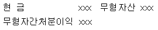
(정답률: 47%)
43. 감사인과 경영자간의 의견불일치로 인한 영향이 재무제표에 매우 중요하고 전반적이어서 한정의견의 표명으로는 재무제표의 오도나 불완전성을 적절히 공시할 수 없다고 판단되는 경우에 표명하는 감사 의견은?
- 특기사항기재 적정의견
- 의견거절
- 제한의견
- 부적정의견
- 불일치의견
(정답률: 46%)
44. 재무제표와 관련된 설명 중 옳은 것은?
- 재무상태표의 자산과 부채는 유동성배열법에 따라 표시해야 한다.
- 비용을 성격별로 분류하는 기업은 비용의 기능에 대한 추가 정보를 반드시 공시해야 한다.
- 자본변동표는 자본거래를 제외한 모든 원천에서 인식된 자본의 변동을 나타낸다.
- 현금흐름표는 기업의 회계선택에 의한 영향을 제거 할 수 없기 때문에 영업성과에 대한 기업간 비교를 어렵게 한다.
- 주석은 재무제표에 포함되며, 유의적인 회계정책의 요약 및 그 밖의 설명으로 구성된다.
(정답률: 46%)
45. 자본과 관련된 설명으로 옳은 것은?
- 자본 구성항목의 표시는 유동성배열법을 따른다.
- 주식배당으로 주식을 교부하면 자본금이 증가한다.
- 주식발행초과금과 같은 자본잉여금이라도 주주에게 배당이 가능하다.
- 자본이란 자산총액에서 부채총액을 차감한 잔액으로 채권자에게 귀속될 잔여지분의 성격을 갖는다.
- 기타포괄손익누계액은 자본거래로부터 발생한다.
(정답률: 50%)
46. 포괄손익계산서에서 기타포괄손익의 세부항목으로 표시되는 항목은?
- 지분법손실
- 만기보유금융자산처분이익
- 매도가능금융자산평가이익
- 유형자산손상차손
- 중단영업손실
(정답률: 알수없음)
47. 다음 오류 중에서 시산표의 작성을 통하여 발견할 수 없는 것은?
- ￦100,000의 상품을 현금매입하고 거래에 대한 회계 처리를 누락하였다.
- ￦300,000의 매출채권 회수시 현금계정 차변과 매출 채권계정 차변에 각각 ￦300,000을 기입하였다.
- ￦1,000,000의 매출채권 회수에 대한 분개를 하고, 매출 채권계정에는 전기하였으나 현금계정에 대한 전기는 누락하였다.
- ￦550,000의 매입채무 지급시 현금계정 대변에 ￦550,000을 기입하고 매입채무계정 차변에 ￦5⑤,000을 기입하였다.
- ￦2,000,000의 비품 외상구입에 대한 분개를 하고, 비품 계정 대변과 미지급금계정 대변에 각각 전기하였다.
(정답률: 47%)
48. 유형자산으로 분류되는 아파트 관리시설의 수선ㆍ유지, 교체 등과 관련하여 발생하는 후속원가의 회계처리로 옳지 않은 것은?
- 일상적인 수선ㆍ유지를 위한 사소한 부품의 교체원가는 자산으로 인식될 수 없다.
- 시설 일부에 대한 교체로 인해 관리의 효율이 향상되고 교체 원가가 자산인식기준을 충족한다면 자산으로 인식한다.
- 시설에 대한 정기적인 종합검사원가는 자산인식기준을 충족하더라도 비용으로 처리한다.
- 일상적인 수선ㆍ유지에서 발생하는 원가에는 시설 수선ㆍ유지 인원의 노무비가 포함될 수 있다.
- 설비에 대한 비반복적인 교체에서 발생하는 원가라도 자산인식기준을 충족하면 자산으로 인식한다.
(정답률: 20%)
49. 다음 사항을 수정분개하였을 때 잔액시산표의 합계 금액을 변동시키지 않는 항목은?
- 보험료 중 기간 미경과분을 선급보험료로 인식
- 차입금에 대한 미지급이자의 인식
- 건물 손상차손의 인식
- 유형자산 감가상각비의 인식
- 대여금에 대한 미수이자의 인식
(정답률: 55%)
50. 현금과 관련된 내부통제절차의 예로 적절하지 않은 것은?
- 현금수취액은 지체없이 은행에 예입한다.
- 현금거래보다는 온라인송금 및 인터넷뱅킹을 이용한다.
- 경비지출은 신용카드나 체크카드를 사용한다.
- 현금출납장 기록업무는 현금출납담당자가 수행한다.
- 주기적으로 현금시재액을 실사하고 장부와 대조한다.
(정답률: 15%)
51. 다음 자료를 이용하여 20x2년 매출채권 평균회수 기간을 구하면? (단, 1년을 360일로 계산한다.)
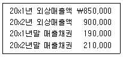
- 60일
- 65일
- 70일
- 75일
- 80일
(정답률: 42%)
52. 다음 자료를 이용하여 상품매입과 관련된 당기현금 지급액을 계산하면?
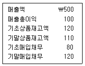
- ₩310
- ₩320
- ₩330
- ₩340
- ₩350
(정답률: 50%)
53. (주)대한의 회계담당자는 기중에 인식한 선수임대료 중에서 기간이 경과되어 실현된 금액에 대한 기말 수정분개를 하지 않았다. 이러한 오류가 (주)대한의 당기재무제표에 미치는 영향으로 옳은 것은?
- 당기순이익이 과대표시된다.
- 기타포괄이익이 과대표시된다.
- 자산이 과대표시된다.
- 부채가 과대표시된다.
- 자본이 과대표시된다.
(정답률: 47%)
54. 기초매출채권은 ￦90,000이고 기말매출채권은 ￦50,000이며, 기초미지급비용은 ￦60,000이고, 기말 미지급비용은 ￦70,000이다. 현금주의에 의한 수익은 ￦400,000이고 비용은 ￦250,000일 때, 발생주의에 의한 순이익은?
- ￦100,000
- ￦120,000
- ￦140,000
- ￦150,000
- ￦200,000
(정답률: 알수없음)
55. (주)대한은 20x1년초에 토지(유형자산)를 ￦1,000,000에 취득한 후 매년 재평가모형을 적용하여 평가하고 있다. 20x1년말과 20x2년말 토지의 공정가치가 각각 ￦800,000과 ￦1,200,000이었다면, (주)대한이 20x2년도 포괄손익계산서에 인식할 당기 손익은?
- ￦400,000 손실
- ￦200,000 손실
- ￦0
- ￦200,000 이익
- ￦400,000 이익
(정답률: 42%)
56. (주)대한은 ￦4,000,000의 기계장치를 구입한 대가로 ￦1,000,000의 현금을 지급하고, 나머지 잔액은 90일 만기의 약속어음으로 지급하였다. 이러한 거래가 거래일 현재 자산, 부채 및 자본에 미치는 영향으로 옳은 것은?
- 자산은 ￦3,000,000 증가하고, 부채는 변동이 없으며, 자본은 ￦3,000,000 증가한다.
- 자산은 ￦3,000,000 증가하고, 부채는 ￦3,000,000 증가하며, 자본은 변동이 없다.
- 자산은 변동이 없고, 부채는 ￦3,000,000 증가하며, 자본은 ￦3,000,000 감소한다.
- 자산은 ￦4,000,000 증가하고, 부채는 ￦3,000,000 증가하며, 자본은 ￦1,000,000 증가한다.
- 자산, 부채, 자본의 변동이 없다.
(정답률: 37%)
57. 기초소모품잔액은 ￦30,000이다. 기중에 구입한 소모품 ￦100,000은 전액 비용처리하였다. 기말실사 결과 미사용소모품이 ￦20,000일 때 이를 반영하는 수정분개는? (단, 기말미사용소모품은 자산으로 인식한다.) (문제 오류로 실제 시험에서는 1, 4번이 정답처리 되었습니다. 여기서는 1번을 누르면 정답 처리 됩니다.)
- (차) 소모품비 10,000 (대), 소모품 10,000
- (차) 소모품비 20,000 (대), 소모품 20,000
- (차) 소모품 10,000 (대), 소모품비 10,000
- (차) 소모품 20,000 (대), 소모품비 20,000
- 수정분개없음
(정답률: 34%)
58. (주)대한은 거래처로부터 20x1년 1월 1일에 만기 6개월, 액면가액 ￦10,000(이자율 연 6%, 만기지급)의 약속어음을 받았다. 3개월 후인 4월 1일 은행에서 이 약속어음을 할인(이자율 연 12%)하였다. 4월 1일 거래로 인하여 인식할 당기손익은? (단, 동 어음의 할인은 제거요건을 충족하며, 이자는 월할계산한다.)
- ￦109 손실
- ￦9 손실
- ￦0
- ￦9 이익
- ￦109 이익
(정답률: 55%)
59. 다음은 (주)대한의 20x2년말 수정전시산표의 일부 이다. 비품은 20x1년초에 구입한 것이며, 정률법을 이용하여 감가상각하고 있다. 기말수정분개 후 20x2년말 비품의 장부금액은?
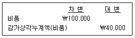
- ₩24,000
- ₩36,000
- ₩60,000
- ₩64,000
- ₩100,000
(정답률: 알수없음)
60. A아파트 관리사무소장은 7월초 유지보수팀에 소액현금제도를 도입하였다. 소액현금한도는 ￦100,000 이며, 매월 말에 지출증빙과 사용내역을 받아 소액 현금을 보충한다. 7월 지출내역은 교통비 ￦25,000과 회식비 ￦59,000이었다. 7월말 소액현금 실사잔액은 ￦10,000이었으며, 부족분에 대해서는 원인이 밝혀지지 않았다. 7월말 소액현금의 보충시점에서 적절한 분개는? (순서대로 차변, 대변
- 현금 84,000 당좌예금 84,000
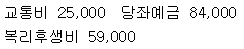
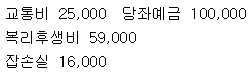
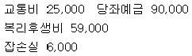
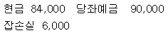
(정답률: 46%)
61. 다음 자료를 이용하여 (주)대한의 20x1년말 재무 상태표에 표시될 현금및현금성자산은?
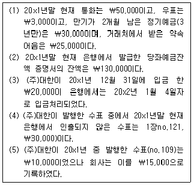
- ₩170,000
- ₩173,000
- ₩195,000
- ₩198,000
- ₩223,000
(정답률: 40%)
62. (주)대한의 건설계약과 관련된 자료는 다음과 같다. (주)대한의 20x2년도 계약손실은? (단, 진행기준을 적용하여 수익을 인식하며, 진행률은 발생한 누적계약원가를 추정총계약원가로 나누어 산정한다.)
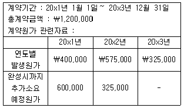
- ￦180,000
- ￦185,000
- ￦190,000
- ￦195,000
- ￦200,000
(정답률: 43%)
63. 실지재고조사법을 사용하는 기업이 당기 중 상품 외상매입에 대한 회계처리를 누락하였다. 기말현재동 매입채무는 아직 상환되지 않았다. 기말실지재고 조사에서는 이 상품이 포함되었다. 외상매입에 대한 회계처리 누락의 영향으로 옳은 것은? (순서대로 자산, 부채, 자본, 당기순이익)
- 과소, 과소, 영향없음, 영향없음
- 과소, 과소, 과대, 과대
- 과소, 과소, 영향없음, 과소
- 영향없음, 영향없음, 영향없음, 영향없음
- 영향없음, 과소, 과대, 과대
(정답률: 알수없음)
64. (주)대한은 20x1년부터 전자제품을 판매하면서 3년간 보증수리를 무상으로 해주는데 20x1년도에 ￦250,000, 20x2년도에 ￦500,000을 보증수리비로 인식하였다. 실제 지출한 보증수리비는 20x1년도에 ￦150,000, 20x2년도에 ￦320,000이었다. 20x2년도말 제품보증충당부채 잔액은?
- ￦180,000
- ￦220,000
- ￦250,000
- ￦260,000
- ￦280,000
(정답률: 50%)
65. (주)대한은 20x1년 1월 1일에 ￦880,000에 취득한 기계장치(내용연수 10년, 잔존가치 ￦0)를 정액법에 따라 감가상각해 오던 중 20x3년 1월 1일에 잔여 내용연수를 5년으로 새롭게 추정하였다. 20x3년 12월 31일 기계장치 장부금액은?
- ￦537,143
- ￦552,456
- ￦563,200
- ￦616,240
- ￦740,500
(정답률: 42%)
66. 다음 자료를 이용하여 계산된 추정기말상품재고액은?
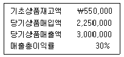
- ￦600,000
- ￦650,000
- ￦700,000
- ￦750,000
- ￦800,000
(정답률: 64%)
67. (주)대한의 토지취득과 관련된 다음의 자료를 이용하여 토지의 취득원가를 계산하면?
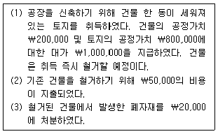
- ￦800,000
- ￦830,000
- ￦850,000
- ￦1,030,000
- ￦1,⑤0,000
(정답률: 50%)
68. 다음 자료를 이용하여 계산된 매출액순이익률은? (단, 총자산과 총부채는 기초금액과 기말금액이 동일한 것으로 가정한다.)
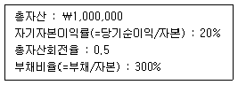
- 2%
- 4%
- 6%
- 8%
- 10%
(정답률: 47%)
69. (주)대한은 20x1년 1월 1일에 액면가액 ￦8,000,000(이자는 매년도 말에 후불로 지급)의 사채를 ￦7,400,000에 발행하였다. (주)대한은 20x1년 12월31일에 사채와 관련하여 유효이자율법에 따라 다음과 같이 분개하였다. 이 사채의 연간 유효이자율과 표시이자율은 각각 몇 %인가?
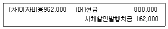
- 12%, 10%
- 13%, 10%
- 13%, 11%
- 14%, 10%
- 14%, 11%
(정답률: 알수없음)
70. 다음의 자료를 이용하여 계산된 매출총이익은?
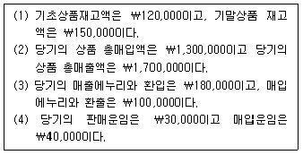
- ￦210,000
- ￦280,000
- ￦310,000
- ￦350,000
- ￦490,000
(정답률: 42%)
71. 다음은 현금흐름표의 일부이다. 기초 현금및현금성자산이 ￦80,000이고, 기말 현금및 현금성자산이 ￦1⑤,000일 때, 영업활동현금흐름은?
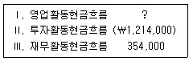
- ￦755,000
- ￦780,000
- ￦885,000
- ￦940,000
- ￦965,000
(정답률: 50%)
72. 다음의 상황에서 (주)대한이 인식할 수익은?
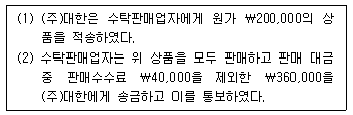
- ￦100,000
- ￦160,000
- ￦200,000
- ￦320,000
- ￦400,000
(정답률: 46%)
73. 원가행태에 관한 설명 중 옳지 않은 것은?
- 계단(준고정)원가는 일정한 범위의 조업도 수준에서만 원가총액이 일정하다.
- 직접재료원가는 변동원가에 속한다.
- 단위당 변동원가는 조업도가 증가함에 따라 증가한다.
- 기본료와 사용시간당 통화료로 부과되는 전화요금은 사용시간을 조업도로 본 혼합원가로 볼 수 있다.
- 원가-조업도-이익(CVP) 분석에서 고정판매관리비도 고정원가에 포함된다.
(정답률: 40%)
74. 직접원가와 간접원가의 분류에 영향을 미치지 않는 것은?
- 원가의 추적가능성
- 원가의 중요성
- 원가정보시스템의 정교성
- 원가의 변동성
- 원가대상
(정답률: 0%)
75. A아파트는 건물의 수선ㆍ유지에 필요한 소모품을 자체생산하고 있다. 현재 필요한 수량은 월 20단위이고, 단위당 생산변동원가는 ￦100이며 고정원가는 월 ￦1,200이다. 이 소모품을 외부에서 구입하는 경우 A아파트의 생산설비를 월 ￦400에 임대할 수 있으며 A아파트의 월 고정원가는 80% 수준으로 감소한다. A아파트가 이 소모품을 외부에서 구입할 때 지급할 수 있는 단위당 최대금액은?
- ￦92
- ￦132
- ￦148
- ￦168
- ￦192
(정답률: 39%)
76. A아파트는 1인당 ￦50,000의 변동원가와 ￦8,000,000의 총고정원가가 소요되는 주부 교육 프로그램을 계획하고 있다. 1인당 참가비는 ￦100,000을 받는다. 이 프로그램을 실시하면, 구청으로부터 총 ￦2,000,000의 지원금을 받는다. 이 프로그램의 손익분기점(인원수)은?
- 100명
- 110명
- 115명
- 120명
- 150명
(정답률: 40%)
77. A아파트는 건물의 수선ㆍ유지를 위해 총구입원가가 ￦10,500인 벽돌 X를 100단위 보유하고 있으며, 다른 아파트에 단위당 ￦110의 가격에 판매할 수 있다. 이 때 총 ￦700의 배달료를 부담하여야 한다. A아파트는 벽돌 X 대신에 비슷한 벽돌 Y를 단위당 ￦106에 구입하여 사용할 수 있다. A아파트가 벽돌 X 또는 Y를 100단위 사용한다면, 어느 벽돌을 사용하는 것이 얼마나 유리한가?
- 벽돌 X, ￦300
- 벽돌 X, ￦400
- 벽돌 Y, ￦300
- 벽돌 Y, ￦400
- 벽돌 Y, ￦500
(정답률: 34%)
78. 직접재료원가의 제품단위당 표준사용량은 5kg이고, 표준가격은 kg당 ￦3이다. 4월에 직접재료 20,000kg을 총 ￦65,000에 구입하여 18,000kg을 사용하였다. 4월에 제품 3,000단위를 생산했을 때, 직접재료원가의 가격차이와 능률차이는? (단, 직접재료원가의 가격차이는 구입시점에서 계산한다.)
- 가격차이 ￦5,000(불리0), 능률차이 ￦6,000(불리)
- 가격차이 ￦5,000(불리), 능률차이 ￦9,000(불리)
- 가격차이 ￦6,000(유리), 능률차이 ￦6,000(유리)
- 가격차이 ￦6,000(유리), 능률차이 ￦15,000(유리)
- 가격차이 ￦11,000(불리), 능률차이 ￦15,000(유리)
(정답률: 31%)
79. A아파트 전기작업반의 월별 직접노무시간과 경비에 대한 기록이 다음과 같다. 7월의 직접노무시간은 200시간으로 예상된다. 고저점법을 적용하여 7월의 경비를 추정하면?
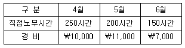
- ￦8,500
- ￦8,600
- ￦8,700
- ￦8,800
- ￦8,900
(정답률: 55%)
80. A아파트 관리사무소는 재활용품 판매대금으로 종량제 봉투를 구입하여 주민들에게 3개월마다 나누어 주고있다. 4월부터 6월까지의 재활용품 판매대금은 ￦500,000이며 이 금액으로 7월초에 묶음당 ￦500의 종량제봉투를 80세대에 나누어 주려고 한다. 6월말에 종량제봉투 10묶음이 남아 있었고 종량제봉투를 모든 세대에 같은 묶음수로 최대한 나누어 준다면 총 몇 묶음의 종량제봉투가 남는가?
- 10묶음
- 30묶음
- 50묶음
- 60묶음
- 70묶음
(정답률: 47%)
3과목: 공동주택시설개론
81. 건물 밑바닥 전체를 일체화시키는 기초형식으로 연약지반에 건물을 건축할 경우에 사용되는 것은?
- 줄기초
- 독립기초
- 복합기초
- 온통기초
- 주춧돌기초
(정답률: 75%)
82. 지반조사방법에 해당하지 않는 것은?
- 보링
- 물리탐사법
- 베인테스트
- 크리프시험
- 표준관입시험
(정답률: 77%)
83. 조적구조에 관한 설명으로 옳지 않은 것은?
- 내화벽돌은 흙 및 먼지 등을 청소하고 물축이기는 하지 않고 사용한다.
- 치장줄눈을 바를 경우에는 줄눈 모르타르가 굳기 전에 줄눈파기를 한다.
- 테두리보는 벽체의 일체화, 하중의 분산, 벽체의 균열 방지 등의 목적으로 벽체 상부에 설치한다.
- 영식 쌓기는 한 켜는 길이쌓기로, 다음 켜는 마구리 쌓기로 하며 모서리나 벽 끝에는 칠오토막을 쓴다.
- 아치쌓기는 그 축선에 따라 미리 벽돌나누기를 하고 아치의 어깨에서부터 좌우 대칭형으로 균등하게 쌓는다.
(정답률: 75%)
84. 벽돌쌓기에 관한 설명으로 옳지 않은 것은?
- 벽돌벽이 콘크리트 기둥(벽)이나 슬래브 하부면과 만날때는 그 사이에 모르타르를 충전한다.
- 벽돌쌓기는 도면 또는 공사시방서에서 정한 바가 없을 때에는 미식 쌓기로 한다.
- 연속되는 벽면의 일부를 트이게 하여 나중 쌓기로 할 때에는 그 부분을 층단 들여쌓기로 한다.
- 벽돌벽이 블록벽과 서로 직각으로 만날 때에는 연결 철물을 만들어 블록 3단마다 보강하여 쌓는다.
- 가로 및 세로 줄눈의 너비는 도면 또는 공사시방서에 정한 바가 없을 때에는 10mm를 표준으로 한다.
(정답률: 54%)
85. 아파트 세대간 경계벽의 최소 두께는? (단, 시멘트 모르타르, 회반죽, 석고플라스터 기타 이와 유사한 재료의 바름두께를 포함하며, 벽체구조는 철근 콘크리트조이다.)
- 12cm
- 15cm
- 18cm
- 21cm
- 24cm
(정답률: 50%)
86. 철골구조의 내화피복공법에 해당하지 않는 것은?
- 타설공법
- 조적공법
- 압착공법
- 도장공법
- 뿜칠공법
(정답률: 67%)
87. 일반구조용 압연강재의 표시기호로 옳은 것은?
- SS
- SM
- SSC
- SMA
- SPSR
(정답률: 80%)
88. 한중콘크리트공사에 관한 설명으로 옳지 않은 것은?
- 특별한 경우에 시멘트는 직접 가열하여 사용한다.
- 한중콘크리트에는 공기연행 콘크리트를 사용하는 것을 원칙으로 한다.
- 동결한 지반 위에 콘크리트를 부어 넣거나 거푸집의 동바리를 세워서는 안된다.
- 빙설이 혼입된 골재, 동결상태의 골재는 원칙적으로 비빔에 사용하지 않는다.
- 단위수량(單位水量)은 콘크리트의 소요성능이 얻어지는 범위 내에서 될 수 있는 한 적게 한다.
(정답률: 80%)
89. 콘크리트공사현장에 반입되는 콘크리트의 품질관리 및 검사 항목에 해당하지 않는 것은?
- 슬럼프
- 공기량
- 중성화
- 염화물량
- 단위수량(單位水量)
(정답률: 75%)
90. 다음 철근콘크리트보의 단면에서 철근의 피복두께를 나타내는 것은?
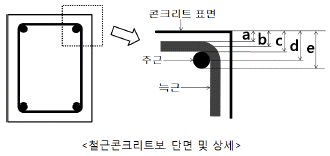
- a(콘크리트 표면에서 늑근 바깥쪽 표면까지의 거리)
- b(콘크리트 표면에서 늑근 중심까지의 거리)
- c(콘크리트 표면에서 주근 바깥쪽 표면까지의 거리)
- d(콘크리트 표면에서 주근 중심까지의 거리)
- e(콘크리트 표면에서 주근 안쪽 표면까지의 거리)
(정답률: 65%)
91. 목조지붕의 아스팔트 싱글공사에 관한 설명으로 옳지 않은 것은?
- 두루마리 형태의 제품은 변형을 방지하기 위하여 수평으로 눕혀서 보관한다.
- 시공하기 직전에 아스팔트 싱글은 최소 24시간 동안 10℃ 이상의 온도에서 보관한다.
- 펠트는 수분으로부터 격리되어야 하며 항상 외기와 차단된 창고나 건물 내부에 보관한다.
- 아스팔트 싱글용 못이나 거멀못은 아연제 또는 아연도 제품을 사용하고, 공장에서 접착제가 도포된 부분에는 못질을 하지 않는다.
- 유리섬유 제품의 아스팔트 싱글은 풍압에 대한 고려가 필요하지 않은 일반적인 경우에는 무게가 9.27kg/m2이상인 제품을 사용한다.
(정답률: 알수없음)
92. 실링방수공사에서 시공을 중지해야 하는 경우에 해당하지 않는 것은?
- 기온이 2℃인 경우
- 기온이 33℃인 경우
- 습도가 80%인 경우
- 구성부재의 표면온도가 55℃인 경우
- 강우 후 피착체가 아직 건조되지 않은 경우
(정답률: 75%)
93. 시멘트 모르타르계 방수공사에 관한 설명으로 옳지 않은 것은?
- 지붕 슬래브, 실내 바닥 등의 방수바탕은 1/100~1/50의 물매로 한다.
- 양생시 재령 초기에는 충격 및 진동 등의 영향을 주지 않도록 한다.
- 바탕처리에 있어서 오목모서리는 직각으로 면처리하고, 볼록모서리는 완만하게 면처리한다.
- 물은 청정하고 유해 함유량의 염분, 철분, 이온 및 유기물 등이 포함되지 않은 깨끗한 물을 사용한다.
- 곰보, 콜드 조인트, 이음타설부, 균열 등의 부위는 방수층 시공 후에 실링재 등으로 방수처리를 한다.
(정답률: 84%)
94. 다음의 용어에 관한 설명 중 옳지 않은 것은?
- 코너비드 : 기둥과 벽의 모서리 등을 보호하기 위해 설치하는 것
- 코펜하겐리브 : 음향조절을 하기 위해 오림목을 특수한 형태로 다듬어 벽에 붙여 대는 것
- 걸레받이 : 바닥과 접한 벽체 하부의 보호 및 오염방지를 위하여 높이 10~20cm 정도로 설치하는 것
- 고막이 : 벽면 상부와 천장이 접하는 곳에 설치하는 수평가로재로, 경계를 구획하고 디자인이나 장식을 목적으로 하는 것
- 멀리온(mullion) : 창의 면적이 클 경우 창의 개폐시 진동으로 유리가 파손될 우려가 있으므로 창의 면적을 분할하기 위하여 설치하는 것
(정답률: 62%)
95. 유리공사에 관한 설명으로 옳지 않은 것은?
- 배수구멍은 일반적으로 5mm 이상의 지름으로 2개 이상이어야 한다.
- 복층유리는 15매 이상 겹쳐서 적치하여서는 안되며, 각각의 판유리 사이는 완충재를 두어 보관한다.
- 세팅 블록은 유리폭의 1/4 지점에 각각 1개씩 설치하여 유리의 하단부가 하부 프레임에 닿지 않도록 해야 한다.
- 4℃ 이상의 기온에서 시공하여야 하며, 더 낮은 온도에서 시공해야 할 경우, 담당원의 승인을 받은 후 시공한다.
- 습도가 높은 날이나 우천시에는 담당원의 승인을 받은 후 시공하며, 실란트 작업의 경우 상대습도 90% 이상 이면 작업을 하여서는 안된다.
(정답률: 알수없음)
96. 온수온돌공사의 마감 모르타르 바르기에 관한 설명으로 옳지 않은 것은?
- 온돌바닥 모르타르 바르기의 최종 미장은 미장기계나 쇠흙손을 사용하여 마감한다.
- 온돌바닥 모르타르 바르기의 미장마감 횟수는 최소 2회 이상으로 하며, 고름작업도 미장 횟수에 포함한다.
- 온돌층 내부공사를 완전히 완료하고, 이를 확인한 후에 모르타르 바르기를 시작한다.
- 각 미장 횟수별 시기는 표면에 물기가 걷힌 상태에서 하고, 흙손자국이 남지 않도록 한다.
- 모르타르 바르기 하루 전에 바탕층에 충분히 살수하여 모르타르의 수분이 하부로 이동하는 것을 방지하여야 한다.
(정답률: 75%)
97. 도배공사에 관한 설명으로 옳지 않은 것은?
- 도배지 보관장소의 온도는 4℃ 이상으로 유지되도록 한다.
- 창호지는 갓둘레 풀칠을 하여 붙이는 것을 원칙으로 한다.
- 도배지를 완전하게 접착시키기 위하여 접착과 동시에 롤링을 하거나 솔질을 해야 한다.
- 두꺼운 종이, 장판지 등은 물을 뿌려두거나 풀칠하여 2시간 정도 방치한 다음 풀칠을 고르게 하여 붙인다.
- 도배공사를 시작하기 72시간 전부터 시공 후 48시간이 경과할 때까지는 시공 장소의 온도가 16℃ 이상으로 유지되도록 한다.
(정답률: 67%)
98. 도장공사에 관한 설명으로 옳지 않은 것은?
- 도료의 배합비율 및 시너의 희석비율은 용적비로 표시한다.
- 녹, 유해한 부착물 및 노화가 심한 기존의 도막은 완전히 제거한다.
- 가연성 도료는 전용 창고에 보관하는 것을 원칙으로 하며, 적절한 보관온도를 유지하도록 한다.
- 도료는 바탕면의 조밀, 흡수성 및 기온의 상승 등에 따라 배합 규정의 범위 내에서 도장하기에 적당하도록 조절한다.
- 도금된 표면, 스테인리스강, 크롬판, 동, 주석 또는 이와 같은 금속으로 마감된 재료는 별도의 지시가 없으면 도장하지 않는다.
(정답률: 73%)
99. 가로(40cm)×세로(50cm)×높이(500cm)인 철근콘크 리트 기둥이 20개일 때, 기둥의 전체 중량은?
- 32ton
- 40ton
- 48ton
- 56ton
- 60ton
(정답률: 70%)
100. 길이 5m, 높이 3m의 벽돌벽을 두께 1.0B로 쌓을 때, 요구되는 벽돌의 정미량은? (단, 벽돌은 표준형을 사용하며, 줄눈의 너비는 10mm로 한다.)
- 1,735매
- 2,235매
- 2,735매
- 3,235매
- 3,735매
(정답률: 64%)
101. 공동주택에서의 에너지절약을 위한 고려사항으로 옳지 않은 것은?
- 냉난방시 외기도입량을 최대로 한다.
- 에너지효율이 높은 설비기기를 선택한다.
- 쾌적성을 유지하는 범위내에서 겨울철 실내난방온도를 가급적 낮게 유지한다.
- 열원기기는 부하발생 패턴에 맞추어 대수를 분리하여 제어가 가능하도록 설치한다.
- 중간기에 외기의 엔탈피가 실내 공기의 엔탈피보다 낮을 경우, 외기를 이용하여 냉방한다.
(정답률: 65%)
102. 설비시스템의 소음방지에 관한 설명으로 옳지 않은 것은?
- 급수계통 배관은 유속과 급수압력을 적정하게 조절한다.
- 덕트계통에서는 마찰저항을 최소로 하여 송풍기 정압을 감소시킨다.
- 벽체를 관통하는 배관은 구조체와 직접 접촉하지 않도록 완충재를 사용하여 전달소음을 저감시키도록 한다.
- 진동발생 장비는 장비하부에 방진재(防振材)를 설치하거나, 바닥 또는 실 전체를 뜬바닥(floating floor) 구조로 한다.
- 소음이 공기전달음인 경우에는 제진재를, 구조체를 통한 고체전달음의 경우에는 흡음 및 차음재를 설치하는 것이 소음방지에 가장 효과적이다.
(정답률: 75%)
103. 다음 중 급수설비의 오염 원인과 가장 거리가 먼 것은?
- 배관의 부식
- 급수설비로의 배수 역류
- 저수탱크로의 유해물질 침입
- 크로스 커넥션(cross connection)
- 수격작용(water hammering)의 발생
(정답률: 72%)
104. 수질 및 그 용도에 관한 설명으로 옳지 않은 것은?
- 일반적으로 경수를 끓이면 연수가 된다.
- 연수는 경수에 비해 세탁용으로 적합하다.
- 먹는물의 색도는 5도를 넘지 않아야 한다.
- 보일러 용수로는 연수에 비해 경수가 적합하다.
- 먹는물의 수소이온농도는 pH 5.8 이상 pH 8.5 이하 이어야 한다.
(정답률: 알수없음)
1⑤. 급탕시스템에 관한 설명으로 옳지 않은 것은?
- 배관 지지기구는 배관 시공에 있어서 그 구배를 쉽게 조정할 수 있는 구조로 한다.
- 주택과 아파트에서 공급온도를 60℃로 할 경우, 1일 1인당 급탕량은 75∼150L를 기준으로 한다.
- 배관의 신축을 흡수처리하기 위한 신축이음방법에는 하트포드 접속법과 리프트 이음 접속법이 있다.
- 배관의 구배는 상향공급방식인 경우 급탕수평주관은 선상향 구배로 하고, 복귀관은 선하향 구배로 한다.
- 배관 도중에 밸브를 설치하는 경우, 글로브 밸브(globe valve)는 마찰저항이 크므로 슬루스 밸브(sluice valve)를 사용하는 것이 좋다.
(정답률: 67%)
106. 통기설비에 관한 설명으로 옳은 것은?
- 결합통기관의 지름은 접속되는 통기수직관 지름의 1/2로 한다.
- 도피통기관은 배수수직관 상부를 연장하여 대기중에 개방한 통기관이다.
- 위생기구가 여러 개일 경우 각개통기관보다 환상통기관을 설치하는 것이 통기효과가 더 좋다.
- 섹스티아 시스템(Sextia system)에는 섹스티아 이음쇠와 섹스티아 벤드가 사용된다.
- 각개통기관이 배수관에 접속되는 지점은 기구의 최고 수면과 배수수평지관이 배수수직관에 접속되는 점을 연결한 동수구배선보다 아래에 있도록 한다.
(정답률: 50%)
107. 펌프의 공동현상(cavitation)을 방지하기 위한 대책으로 옳지 않은 것은?
- 펌프의 흡입양정을 작게 한다.
- 펌프의 설치위치를 가능한 낮춘다.
- 배관내 공기가 체류하지 않도록 한다.
- 흡입배관의 지름을 크게 하고 부속류를 적게 하여 손실수두를 줄인다.
- 동일한 양수량일 경우 회전수를 높여서 운전한다.
(정답률: 47%)
108. 배관 부속의 용도에 관한 설명으로 옳지 않은 것은?
- 니플 : 배관의 방향을 바꿀 때
- 플러그, 캡 : 배관 끝을 막을 때
- 티, 크로스 : 배관을 도중에서 분기할 때
- 이경 소켓, 리듀서 : 서로 다른 지름의 관을 연결할 때
- 유니언, 플랜지 : 같은 지름의 관을 직선으로 연결할 때
(정답률: 알수없음)
109. 건물에서 발생하는 오수와 하수도로 유입되는 빗물 및 지하수를 각각 구분되어 흐르게 하기 위한 시설은?
- 중수도시설
- 합류식 하수관거
- 분류식 하수관거
- 개인하수처리시설
- 공공하수처리시설
(정답률: 70%)
110. 소화설비 중 알람밸브(alarm valve)를 사용하는 스프링클러 설비는?
- 건식 스프링클러 설비
- 습식 스프링클러 설비
- 개방형 스프링클러 설비
- 일제살수식 스프링클러 설비
- 준비작동식 스프링클러 설비
(정답률: 50%)
111. 가스설비에 관한 설명으로 옳지 않은 것은?
- 액화천연가스(LNG)는 공기보다 가볍다.
- 공동주택의 가스배관은 기본적으로 단열재를 설치해야 한다.
- 가스배관의 부식과 손상에 의한 가스누설은 안전사고로 이어질 수 있다.
- 정압기(governor)는 가스의 압력을 조정하는 것으로 가스공급설비에 포함된다.
- 이론공기량은 가스 1m3를 완전 연소시키는데 필요한 이론상의 최소 공기량이다.
(정답률: 67%)
112. 중앙집중난방과 비교하여 지역난방의 특징으로 옳지 않은 것은?
- 설비의 운전, 보수 요원이 경감되므로 인건비 관련 비용이 절감된다.
- 대기오염, 소음ㆍ진동 등에 대해 집중적인 관리가 가능하여 환경개선에 효과적이다.
- 공동주택 단지별로 각종 열원기기를 위한 공간이 불필요하므로 이 공간을 유용하게 활용할 수 있다.
- 보일러 등 각종 장비와 위험물의 취급 및 저장 장소에 대한 집중적인 관리가 가능하여 안전성이 높다.
- 공급대상이 광범위하므로 평균적 부하운전이 가능하며, 수용열량의 시간적, 계절적 변동이 작아 열의 이용률이 높다.
(정답률: 80%)
113. 난방ㆍ급탕 겸용 보일러의 출력표시 중 정격출력을 올바르게 나타낸 것은?
- 난방부하+급탕부하+축열부하
- 난방부하+급탕부하+배관부하
- 난방부하+급탕부하+예열부하
- 난방부하+급탕부하+배관부하+예열부하
- 난방부하+급탕부하+배관부하+예열부하+축열부하
(정답률: 47%)
114. 건물의 수변전 설비용량의 추정과 가장 관계가 먼 것은?
- 수용률
- 역률
- 부하율
- 부등률
- 부하설비용량
(정답률: 50%)
115. 엘리베이터의 전기적 안전장치에 해당하는 것은?
- 조속기
- 완충기
- 권상기
- 과부하 계전기
- 종동 스프로켓
(정답률: 70%)
116. 공기조화설비의 에너지절약방법에 관한 일반적 설명 으로 옳지 않은 것은?
- 부하특성, 사용시간대, 사용조건 등을 고려하여 냉난방 조닝을 한다.
- 동절기에 히트펌프를 이용하여 난방할 경우에는 가능한 한 보조열원의 운전을 최소화한다.
- 난방순환수 펌프는 운전효율을 증대시키기 위해 대수제어 또는 가변속제어방식 등을 채택한다.
- 공기조화기 팬은 부하변동에 따른 풍량제어가 가능 하도록 흡인베인제어방식, 가변익축류방식 등을 채택한다.
- 단일덕트 방식은 에너지 손실이 많으므로 지양하고, 이중덕트 방식은 에너지 절약에 도움이 되므로 적극적으로 채택한다.
(정답률: 50%)
117. 리모델링하는 100세대 이상의 공동주택에 환기설비를 설치할 경우, 세대당 요구되는 최소 환기횟수는?
- 시간당 0.3회
- 시간당 0.5회
- 시간당 0.7회
- 시간당 1회
- 시간당 2회
(정답률: 알수없음)
118. 히트펌프(heat pump)와 관계가 없는 용어는?
- 응축기(condenser)
- COP(coefficient of performance)
- 몰리에르선도(Mollier diagram)
- 유효흡입수두(net positive suction head)
- 팽창밸브(expansion valve)
(정답률: 알수없음)
119. 홈네트워크 설비에 관한 설명으로 옳지 않은 것은?
- 월패드는 세대 내의 홈네트워크 시스템을 제어할 수 있는 기기를 말한다.
- 단지서버는 단지 내에 설치하여 홈네트워크 설비를 총괄 관리하는 기기이다.
- 홈네트워크망 중 단지망은 집중구내통신실에서 세대까지를 연결하는 망을 말한다.
- 예비 전원장치는 전원 공급이 중단될 경우 무정전 전원장치 또는 발전기 등에 의한 비상전원을 공급하는 홈네트워크 설비 등을 보호하기 위한 장치를 말한다.
- 홈게이트웨이는 세대내 홈네트워크 기기와 단지서버 간의 통신 및 보안을 수행하는 기본적인 네트워크를 구성하는 기기로, 백본, 방화벽, 워크그룹스위치 등을 말한다.
(정답률: 59%)
120. 지능형 홈네트워크 설비 설치 및 기술기준에 관한 설명으로 옳지 않은 것은?
- 단지서버실의 면적은 최소 5m2 이상으로 하여야 한다.
- 세대단자함은 500mm×400mm×80mm(깊이) 크기로 설치할 것을 권장한다.
- 무인택배함의 설치수량은 소형주택의 경우 세대수의 약 10～15%, 중형주택 이상은 세대수의 15～20% 정도로 설치할 것을 권장한다.
- 통신배관실의 출입문은 최소 폭 0.7m, 높이 1.8m 이상 (문틀의 외측치수)의 잠금장치가 있는 출입문으로 설치 하여야 하며, 관계자외 출입통제 표시를 부착하여야 한다.
- 단지서버실의 출입문은 폭 0.9m, 높이 2m 이상(문틀의 외측치수)의 잠금장치가 있는 출입문으로 설치하며, 관계자외 출입통제 표시를 부착하여야 한다.
(정답률: 50%)